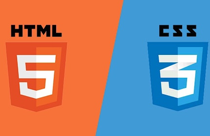
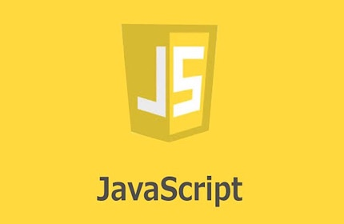

プログラミング
あなただけのオリジナルを創造
その価値を発信しよう
まずは言語に触れてみよう
『やりたい』がきっと見つかる
プログラミング言語紹介

HTML / CSS
●HTML（Hyper Text Markup Language）
コンピューターが理解できるようマークアップし
文章構成などを指示する為に用いられる言語です。
●CSS（Cascading Style Sheets）
HTMLでの構成に対してデザインを施す言語です。

JavaScript
●JavaScript
様々な用途に利用されるプログラミング言語です。
主に見た目へ影響するフロントサイドへ多く扱われ、
サーバーサイドに置いても重宝される言語です。
jQueryやReactといったライブラリも豊富であり、
幅広い分野で求められる市場価値のある言語です。
Ruby / Ruby on Rails
●Ruby
システム開発に適したプログラミング言語です。
開発効率の高さから開発現場では重宝されています。
●Ruby on Rails
Rubyを用いたWebアプリケーションフレームワーク。
Rubyを扱う上では欠かせない知識の一つです。